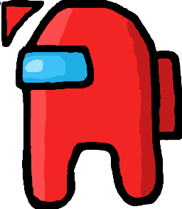

Мене звати Михайло Оришич
Я навчаюся в КПІ ім. Ігоря Сікорського на Кафедрі телекомунікацій НН ІТС в групі ТЗ-21.
Ресурси на тему веб-програмування
- MDN (Mozilla Developers Network) - сайт, на якому є детальна інформація про різні веб-стандарти, від HTTP до CSS до WebGL, разом з прикладами їх використання. Також містить інформацію про розробку розширень для Firefox, оскільки цей сайт (як і Firefox) - проєкт Mozilla.
- W3 Technical Reports - база даних стандартів від організації W3C (World Wide Web Consortium), що є головною організацією з питань веб-стандартів.
- CSS Tricks - сайт з купою інформації про різні аспекти веб-програмування. Раніше спеціалізувався на порадах та прикладах використання різних функцій мови CSS, з чого і пішла назва.
- Josh W Comeau - блог однойменного веб-розробника, що містить багато цікавої та корисної інформації про веб-програмування.
Амоґус
(натисніть на амоґуса, щоб отримати CSS-файл для курсора)
